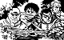

79
Après avoir marché pendant de longues minutes vers le sud sous un soleil de plomb et sur une route vallonnée et étroite, j'arrive maintenant près d'une crête qui me bloque la vue du reste de la route. Je grimpe sur le sommet et j'aperçois une bande d'individus à l'allure louche. Et ils ont tous une épée à la main! Ou la la! Une bande de brigands armés jusqu'aux dents! Et d'ailleurs, l'un d'eux a mon bouclier à la main! Grrr! J'espère que tu as bien noté les pièces d'équipement que j'ai récupéré jusqu'à maintenant parce que ma mémoire me joue encore des tours et je ne me souviens même pas si j'ai une épée! Peut-être que je devrais faire demi-tour et courir vers le nord en direction du village et de la rivière. (Surtout si je n'ai pas d'épée.) Hum, mais je suis un chevalier, je ne devrais pas avoir peur d'eux! Je devrais les combattre ou au moins leur parler.
|